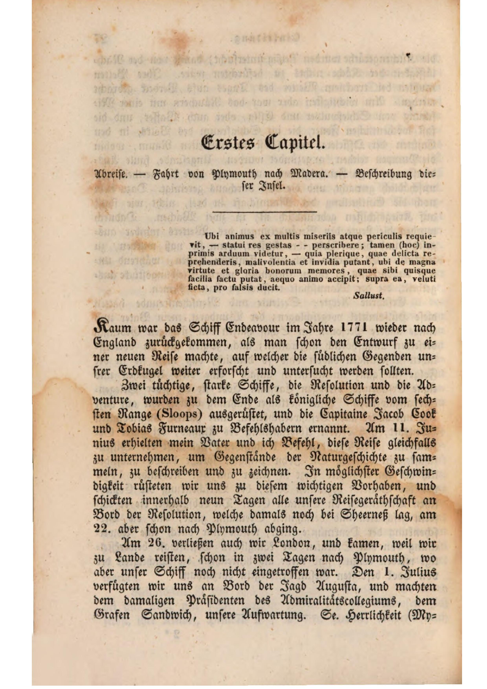

Willkommen zur Digitalen Edition von Georg Forsters Reiseberichte
Reise um die Welt - Kapitel 1 & 2
Faksimile der Buchseite

Transkription
Kaum war das Schiff Endeavour im Jahre 1771 wieder nach England zurückgekommen, als man schon den Entwurf zu einer neuen Reise machte, auf welcher die südlichen Gegenden unsrer Erdkugel weiter erforscht und untersucht werden sollten.